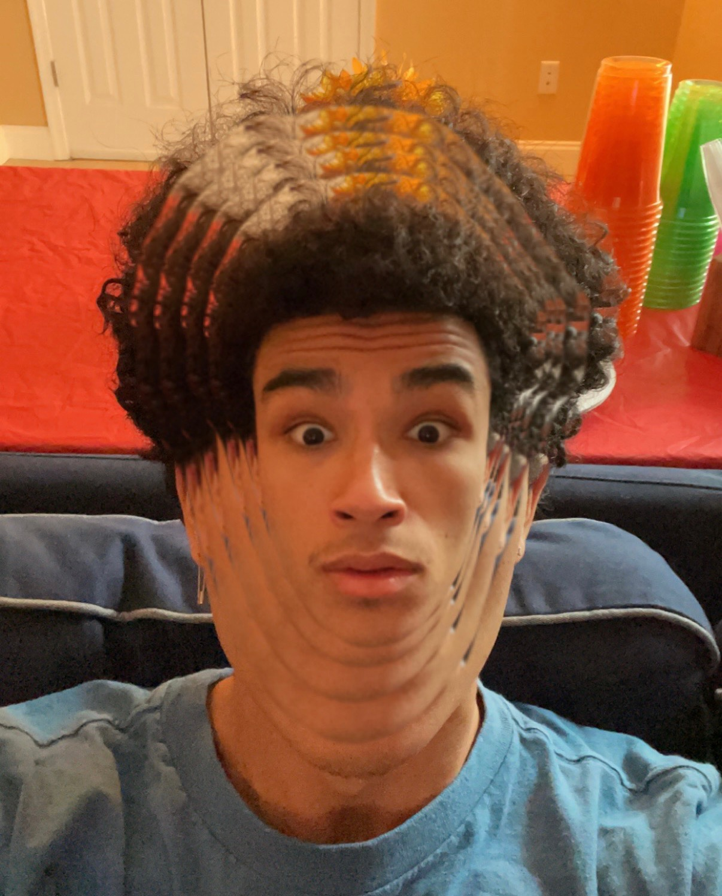

Acting
Elon Performing ArtsI am currently honing my craft at Elon University (as I stated earlier in the Introduction) which offers an in-depth exploration of the craft without latching me down to a Conservatory style program. My teachers have helped to prepare me with various tools for my technique including practice and exercises linked to meisner and stanislovsky work. In addition to this, vocal production and movement have been a vital focus of my collegiate training. I am currently studying with Libby Otos and learning how to take intiative for my own technique. Also feel free to check out Instant Laughter, Elon's premiere improv comedy troupe that I am a member of.


Acting is my passion that I hope to make my career, but I do understand that it can be difficult. I think as long as I have a plan I can find a way to artistically fulfill myself.
Music
Although I was involved with Musical Theatre for a lot of my childhood, this is a relativley new endeavor for me. I have begun composing some indie rock, hip-hop, and experimental music with Logic Pro X and posting the work to Soundcloud. I'm hoping to keep working on my songwriting and compositions so I have another outlet besides Theatre. Keep up with my Soundcloud here: Mikesh on Soundcloud!
Here is one of my most recent songs on Soundcloud.
